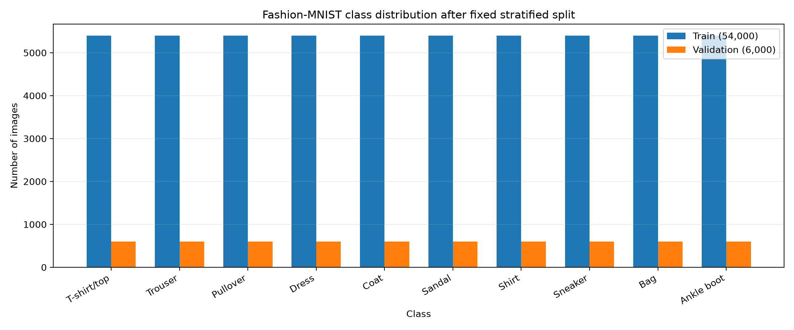
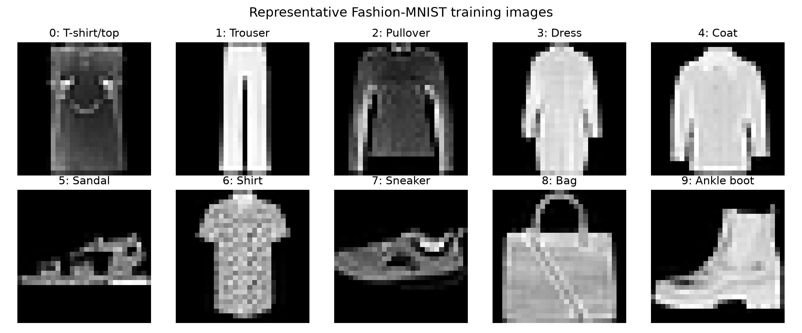
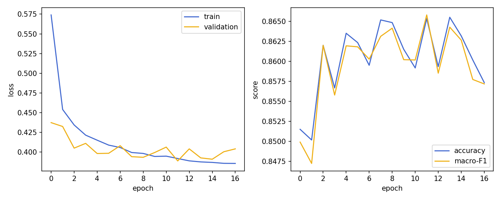
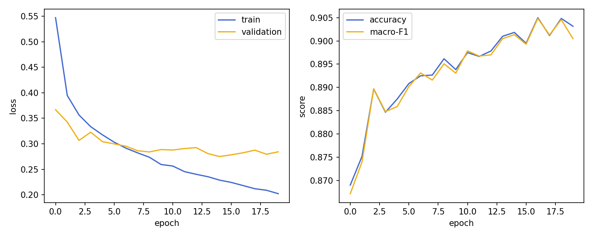
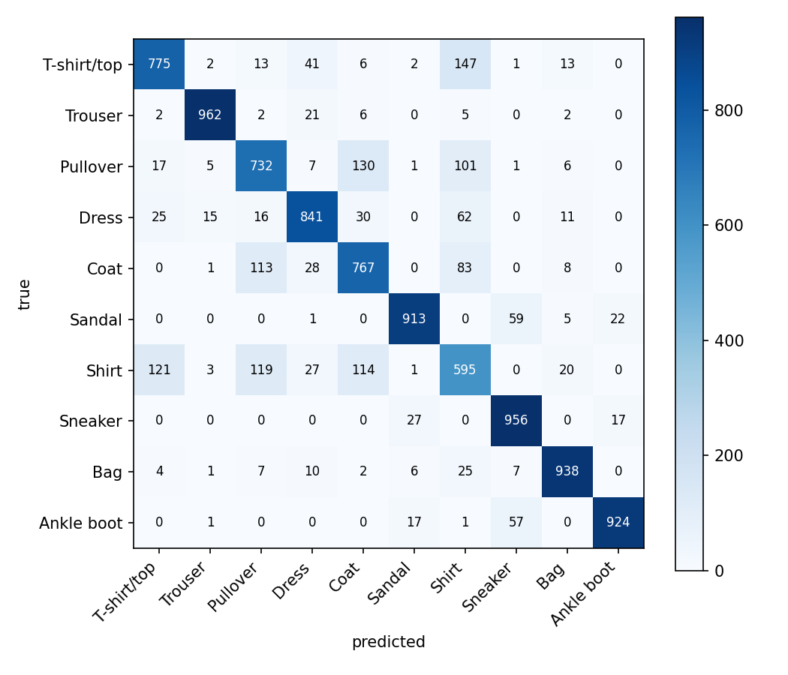
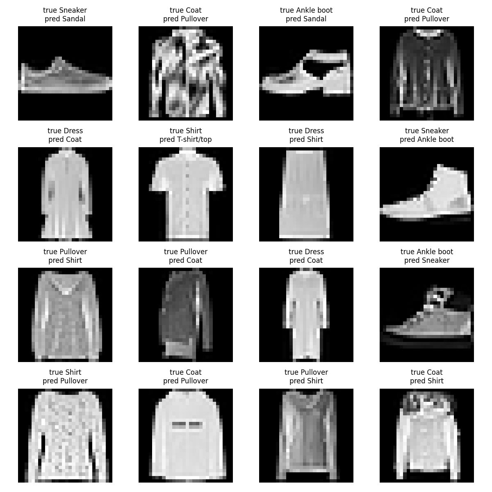
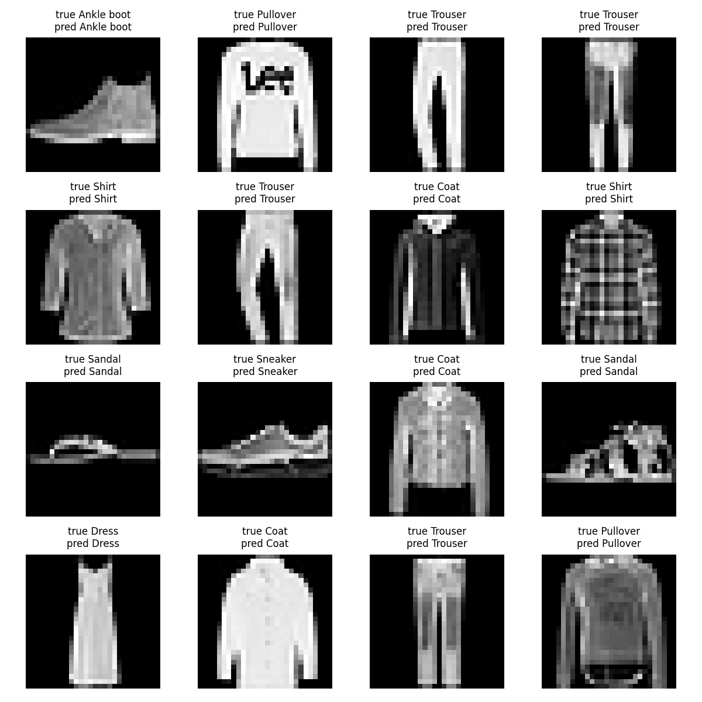

At a glance
Assignment
- Title
- Foundations of Deep Learning Pipelines and Architectures
- Instructor
- Lê Thành Sách
- Group
- NNs
- Members
- Nguyễn Nhật Nam (2352778), Hồ Hồng Phúc Nguyên (2352824), Phan Quốc Đại Sơn (2353053)
Milestones
- M1 Draft
- 23 Sep 2026 · 25% of A1 · In progress
Pipeline complete and verified end to end; linear and MLP trained and evaluated on the test split. CNN, LSTM/GRU and Transformer, the report draft, slides and video are outstanding.
- M2 Final
- 21 Oct 2026 · 75% of A1 · Not started
Links
| Item | Link | Status |
|---|---|---|
| Source code | github.com/nguyenhohongphuc/co3133-deep-learning-project | In progress |
| Checkpoints (or reconstruction instructions) | Each run writes results/a1/runs/<run_id>/best.pt (git-ignored). Reconstruct any reported number with the train command in the repository README.md plus that run's committed config.yaml and the fixed split. | Reconstructible |
| Report | [PDF URL] | TODO |
| Slides | [slides URL] | TODO |
| YouTube presentation | [video URL – title: CO3133-Semester-261 – Group NNs – Assignment 1] | TODO |
Problem statement
Motivation. Online clothing retailers receive product photographs faster than staff can label them, and the category a garment is filed under drives search, recommendation and stock reporting. Fashion-MNIST is the controlled-scale stand-in for that task: it keeps the ten-way garment decision while removing the confounds of colour, background and resolution, so that differences between models can be attributed to the model rather than to the data.
Input. One grayscale image x ∈ R1×28×28, pixel
intensities in [0, 255] before preprocessing. Output. One of
K = 10 mutually exclusive classes (T-shirt/top, Trouser, Pullover, Dress, Coat, Sandal, Shirt,
Sneaker, Bag, Ankle boot). Prediction unit. One image, one label — single-label
multi-class classification, not multi-label.
Formulation. Each model is a function
fθ: R1×28×28 → R10 producing raw
logits z = fθ(x). Class probabilities are
p(y = k | x) = softmax(z)k and training minimises the mean cross-entropy
L(θ) = -(1/N) ∑i log p(yi | xi) over the training
split. The softmax is never applied before the loss: nn.CrossEntropyLoss takes the logits
directly and applies log-softmax internally, so applying softmax first would compute the loss twice and
flatten the gradients. Prediction is ŷ = argmaxk zk.
Main difficulties. (i) Several classes are visually near-identical at 28×28 — Shirt, T-shirt/top, Pullover and Coat share outline and texture, and the confusion matrices below show that this one cluster dominates the error budget. (ii) The images are grayscale and low-resolution, so colour and fine texture cues are unavailable. (iii) The architecture families receive genuinely different views of the same image — a flat 784-vector, a 2D grid, or a sequence of rows or patches — which is exactly the inductive-bias question this assignment is built around.
Research question
Under one fixed data split, one seed and one shared training protocol, how much does the way an image is represented to a model — flattened pixels, a 2D grid, or a sequence of rows or patches — change classification quality on Fashion-MNIST, and is the accuracy gained worth the parameters and the training and inference time it costs?
Learning objectives covered
- Complete PyTorch pipeline: Dataset, DataLoader, preprocessing, augmentation, optimization, evaluation.
- Linear/softmax, MLP, CNN, LSTM/GRU, and Transformer on the same task.
- Comparison with multiple quantitative metrics plus qualitative evidence, not accuracy alone.
- Analysis of inductive bias and input representation (flattened pixels, spatial features, row/column/patch sequences).
Dataset description and EDA
Datasets used
| Dataset | Role | Source / version / license | Samples |
|---|---|---|---|
| MNIST | Development and debugging only | torchvision.datasets.MNIST · CC BY-SA 3.0 | 60,000 train / 10,000 test — not used for any reported number |
| Fashion-MNIST | Primary results (main comparison) | Zalando Research, via torchvision.datasets.FashionMNIST · MIT licence | 70,000 grayscale 28×28 images: 60,000 official train, 10,000 official test, 10 balanced classes |
| CIFAR-10 | Optional extension | Not used | — |
EDA (required items)
- Class distribution —
results/a1/figures/a1_class_distribution.pngwith the counts inresults/a1/tables/a1_class_distribution.csv: 6,000 images per class in the official train set, 5,400 / 600 after the train/validation split. - Input size / shape — raw images are
uint828×28 in [0, 255]; after preprocessing each sample is a float32 tensor of shape[1, 28, 28], batched as[B, 1, 28, 28]. - Imbalance analysis — the dataset is perfectly balanced (10 % per class in every split), so no resampling or class weighting is used. Macro-F1 is still reported next to accuracy because per-class difficulty is very uneven even when the counts are not.
- Representative samples —
results/a1/figures/a1_representative_samples.png. - Storage size, formats, bias and limitations — about 30 MB of idx-ubyte files fetched by
scripts/prepare_data.py(git-ignored; see the README). Limitations: one centred object per image, grayscale, low resolution and no metadata, so conclusions transfer poorly to real catalogue photographs.


Data splitting
| Split | Samples | Source | Stratified |
|---|---|---|---|
| Train | 54,000 (5,400 per class) | Custom split of the official train set | Yes |
| Validation | 6,000 (600 per class) | Custom split of the official train set | Yes |
| Test | 10,000 (1,000 per class) | Official Fashion-MNIST test set, untouched | Official |
Seed: 42 · Split unit: one image ·
Leakage prevention: the split is generated once by python -m src.data.split (scikit-learn
StratifiedShuffleSplit) and committed as results/a1/splits/split_seed42.json;
every loader reads that file and nobody re-splits on the fly. The train and validation index sets are
verified disjoint and to cover all 60,000 training images, the normalization statistics are computed on the
54,000 training images only, and the test set is read solely by src/evaluate.py.
All models in the main comparison use this same split and seed.
Preprocessing
No cleaning or resizing is needed: Fashion-MNIST ships as fixed-size 28×28 grayscale images with no
invalid annotations. The pipeline is ToTensor() (scaling to [0, 1]) followed by
Normalize(mean=0.286209, std=0.353160), both statistics measured on the 54,000-image training
split only — never on validation or test. No augmentation is applied in the main
comparison, so all five architectures see identical inputs; augmentation is listed as a candidate ablation.
Input tensors after preprocessing are [B, 1, 28, 28] float32 with [B] int64
labels, verified to have batch mean ≈ 0 and standard deviation ≈ 1.
Methodology
Pipeline overview
Walkthrough. scripts/prepare_data.py downloads Fashion-MNIST once.
src/data/split.py produces the stratified 54k/6k split and commits it as a JSON index file, so
every model in the comparison trains on byte-identical data. src/data/transforms.py converts
each image to a float tensor and normalizes it with the training-split statistics;
src/data/loaders.py wraps the three splits in DataLoaders with seeded workers.
src/train.py resolves the model config, seeds every RNG, builds the model through a registry
and hands everything to fit() in src/engine/trainer.py, which runs the
train/validate loop, logs one row per epoch to history.csv and saves best.pt
whenever validation macro-F1 improves. Prediction is a plain argmax over the logits; there is
no post-processing step for this task. src/evaluate.py then loads the best checkpoint, runs the
test split exactly once, and writes the metrics and figures required by handbook §12.1.
Mandatory models
| # | Model | Input representation | Key design notes | Params | Status |
|---|---|---|---|---|---|
| 1 | Linear / softmax | Flattened image vector | Single linear layer to logits; CrossEntropyLoss (no softmax applied before the loss) | 7,850 | Implemented |
| 2 | MLP | Flattened image vector | Hidden layers 256 and 128 with ReLU; dropout 0.2 after each hidden layer, since the flattened-pixel models overfit fastest; CrossEntropyLoss on raw logits | 235,146 | Implemented |
| 3 | CNN (self-designed) | 2D image tensor | [conv/pool stack; explain convolution, pooling, feature maps] | [n] | TODO |
| 4 | LSTM or GRU | Sequence of rows / columns / patches | [timestep definition; input size; hidden representation] | [n] | TODO |
| 5 | Transformer | Sequence of rows / columns / patches | [token embedding/projection; positional encoding; attention inputs and outputs] | [n] | TODO |
Optional extensions (do not replace core work)
- Under consideration, none completed at the M1 draft: (a) LSTM vs GRU on the identical row-sequence representation; (b) an augmentation ablation, since the main comparison deliberately uses none; (c) a matched-parameter-budget comparison, so that the CNN and MLP are contrasted at similar capacity rather than similar depth. These are extensions and do not substitute for any missing core model.
Experimental setup
Training configuration
| Setting | Linear | MLP | CNN | LSTM/GRU | Transformer |
|---|---|---|---|---|---|
| Optimizer | Adam, weight decay 0.0 — shared default in configs/a1/base.yaml | ||||
| Learning rate / scheduler | 1e-3, constant (no scheduler) for the main comparison | ||||
| Batch size / epochs | 128 / up to 20 epochs | ||||
| Regularization / early stopping | Per-model dropout where stated; early stopping after 5 epochs with no improvement in validation macro-F1 | ||||
| Checkpoint criterion | Best validation macro-F1 (saved as best.pt), the same rule for every model. Validation loss is logged but not used for selection, because macro-F1 is the reported metric and the two can disagree. | ||||
Environment and fairness
- Hardware
- AMD Ryzen 7 7735HS, 15.2 GB RAM, Windows 11. An NVIDIA RTX 4060 Laptop GPU is present but unused: the installed PyTorch is a CPU-only build, so every reported run is CPU and all models are timed on the same hardware.
- Software versions
- Python 3.10.21 · PyTorch 2.14.0+cpu · torchvision 0.29.0 · NumPy 2.2.6 · pandas 2.3.3 · scikit-learn 1.7.2 · matplotlib 3.10.9 · CUDA not used. Exact versions are frozen in
requirements.lock.txt. - Seeds
- 42 for the main comparison; the seed study repeats it with 42, 1 and 2 (
scripts/run_a1_seeds.ps1). Python, NumPy, torch and the DataLoader workers are all seeded throughsrc/common/seed.py, and a repeated run with the same seed reproduces identical per-epoch numbers. - Mixed precision
- No — CPU-only training.
- Hyperparameter selection
- Shared defaults across all models rather than a per-model search, so architecture is the only factor that changes (handbook §12.2). Any deviation is recorded in that model’s own config file.
Fairness constraints: identical dataset split for all main models, identical evaluation protocol and metrics, reported hardware/software/seed and checkpoint-selection rule.
Experimental design
For each experiment state: hypothesis, changed factor, fixed factors, metrics, conclusion criteria.
| # | Hypothesis | Changed factor | Fixed factors | Metrics | Conclusion criterion |
|---|---|---|---|---|---|
| E1 | Adding a hidden layer to the linear classifier raises macro-F1, because the classes are not linearly separable in raw pixel space. | Architecture: linear → MLP (both on flattened pixels) | Split, seed, optimizer, lr, batch size, epoch budget, checkpoint rule | Test accuracy, macro-F1, parameters, training and inference time | MLP macro-F1 exceeds linear by more than the seed-to-seed spread of the three-seed study. |
| E2 | A convolutional model beats both flattened-pixel models, because weight sharing and locality match the spatial structure of the images. | Input representation: flat vector → 2D grid | Split, seed, training protocol | As E1, plus per-class F1 on the Shirt cluster | CNN macro-F1 exceeds the best flattened-pixel model, and the gain concentrates in the Shirt/Pullover/Coat classes. |
| E3 | Sequence models reach comparable accuracy but cost more time per image, because a 28-step recurrence cannot be parallelised the way a convolution can. | Input representation: 2D grid → sequence of rows / patches | Split, seed, training protocol | As E1, with emphasis on inference time per image | Accuracy within a small margin of the CNN while inference time per image is clearly higher. |
| E4 | Results are stable across seeds, so the ranking is a property of the architectures and not of one lucky initialisation. | Seed: 42, 1, 2 | Everything else | Mean ± standard deviation of accuracy and macro-F1 | The ranking of the five models is unchanged across all three seeds. |
At the M1 draft only E1 has been run; E2–E4 are blocked on the three remaining models.
Results
Main comparison (Fashion-MNIST)
| Model | Accuracy | Macro-F1 | Parameters | Training time | Inference time |
|---|---|---|---|---|---|
| Linear / softmax | 0.8403 | 0.8408 | 7,850 | 459 s (17 epochs, early-stopped) | 0.0034 ms/image |
| MLP | 0.8940 | 0.8941 | 235,146 | 586 s (20 epochs) | 0.0070 ms/image |
| CNN | [x] | [x] | [x] | [x] | [x] |
| LSTM / GRU | [x] | [x] | [x] | [x] | [x] |
| Transformer | [x] | [x] | [x] | [x] | [x] |
Test split, seed 42, checkpoint selected by best validation
macro-F1, all runs on the CPU described under Environment. Accuracy and macro-F1 come from
results/a1/runs/<run_id>/metrics_test.json; the test split was read once per model, after
training. Mean ± standard deviation over seeds 42, 1 and 2 (experiment E4) is still to run, so no
claim is made here about how stable these numbers are.
Training behaviour


Linear classifier. Training and validation loss fall together for the first few epochs and then flatten near 0.39 — the two curves stay close, which is underfitting rather than overfitting: the model has 7,850 parameters and simply cannot represent the decision boundary any better. Validation macro-F1 peaked at 0.8658 at epoch 11, that epoch was checkpointed, and training stopped at epoch 16 after five epochs without improvement. Note that epoch 16 had a lower validation loss than several earlier epochs while its macro-F1 was worse — the concrete case for selecting on the metric being reported rather than on loss.
MLP. The gap between the curves opens steadily after about epoch 8: training loss reaches 0.202 while validation loss stalls at 0.284. That gap is ordinary overfitting, held in check by dropout 0.2, and validation macro-F1 was still improving slowly at the epoch budget (best 0.9048 at epoch 16 of 20), so early stopping never triggered. A longer budget would probably gain a little more, which is worth revisiting once the remaining three models set a fair common budget.
Implementation issues and fixes. Three defects were found by running the pipeline rather
than by reading it: fit() raised NameError after the final epoch because pandas
was not imported, which would have destroyed history.csv at the end of a long run;
inference_time divided by zero when a loader had fewer batches than the warm-up count; and the
Vietnamese completion message crashed with UnicodeEncodeError on the cp1252 Windows console,
returning a non-zero exit code that would have halted run_a1_all.ps1 mid-batch. All three are
fixed. The training loop itself was validated by checking that it can drive a 100-image subset to near-zero
loss, and that a repeated run with the same seed reproduces identical per-epoch numbers.
Confusion matrices

Both matrices have the same shape: a strong diagonal for the footwear, bag and trouser classes, and one dense off-diagonal block among T-shirt/top, Pullover, Coat and Shirt.
Qualitative results


The failure grid is dominated by long-sleeved upper-body garments that are genuinely ambiguous at 28×28 — a Pullover read as a Shirt, a Coat read as a Pullover — plus a handful of sneaker/ankle-boot swaps where the ankle height is only a few pixels. Several of these would be hard for a human annotator without the original colour photograph, which puts a practical ceiling on what any model in this comparison can reach.
Comparison and discussion
How much better. The MLP beats the linear classifier by 5.37 accuracy points (0.8940 vs. 0.8403) and 5.33 macro-F1 points (0.8941 vs. 0.8408). This supports hypothesis E1: the classes are not linearly separable in raw pixel space, and one hidden layer pair recovers a substantial part of what the linear model cannot express.
Where the difference appears. Not uniformly. The two models are within about one point of each other on Trouser, Bag, Sandal, Sneaker and Ankle boot — classes with distinctive silhouettes that a linear boundary already separates. The gain concentrates in the ambiguous cluster: Shirt recall rises from 0.595 to 0.714, Pullover from 0.732 to 0.817 and Coat from 0.767 to 0.842. Errors inside the T-shirt/Pullover/Coat/Shirt block fall from 964 to 674, which is 60 % and 64 % of each model's total errors respectively — so the extra capacity is spent almost entirely where the classes overlap.
Cost. The MLP uses 30× the parameters (235,146 vs. 7,850), 28 % more wall-clock training time (586 s vs. 459 s, though the linear run early-stopped three epochs sooner) and about 2× the inference time per image (0.0070 ms vs. 0.0034 ms on CPU). At this scale both are cheap in absolute terms, so the accuracy is worth buying; the trade-off becomes interesting only once the convolutional and sequence models enter, where inference cost grows much faster than parameter count.
What cannot be concluded yet. Both models see the same flattened 784-vector, so this comparison says nothing about inductive bias — it measures depth and capacity, not representation. The representation question (E2, E3) needs the CNN and the sequence models. And with a single seed there is no evidence yet that a 5-point gap is beyond run-to-run variation, although a gap this size is very unlikely to be noise; E4 will quantify that.
Data representation and inductive bias
Both models implemented so far discard spatial structure at the first layer: flattening
[1, 28, 28] into a 784-vector means a pixel and the pixel directly below it are no more related
than any other pair, and each has its own independent weight. That is visible in the failure mode —
the errors are concentrated exactly where classes differ by local shape (a collar, a sleeve edge, a button
placket) rather than by overall brightness or silhouette. It is also why the linear model needs only 7,850
parameters to capture most of the “easy” classes, and why the MLP must spend 235,146 to buy back
part of the hard cluster. The remaining three models are precisely the test of this: a CNN reuses one kernel
across all positions, so local shape is learnt once and matched everywhere; a recurrent model reads rows in
order, imposing a top-to-bottom reading of the garment; a Transformer lets every patch attend to every
other, at the cost of having to learn positional structure from data rather than assuming it. Whether those
biases pay for themselves on 28×28 grayscale images is the research question, and this draft can only
set the flattened-pixel baseline for it.
Error analysis
| Error group | Frequency / rate | Examples | Hypothesised cause | Improvement idea |
|---|---|---|---|---|
| Upper-body garment cluster: T-shirt/top ↔ Pullover ↔ Coat ↔ Shirt | 674 of the MLP’s 1,060 test errors (63.6 %); 964 of the linear model’s 1,597 (60.4 %) | Figure 5, Figure 6 | The four classes share outline, aspect ratio and mean brightness; they differ by local detail (collar, buttons, sleeve edge) that survives poorly at 28×28 and is destroyed entirely by flattening, which gives every pixel an independent weight | A convolutional model, whose shared kernels detect local shape wherever it occurs (experiment E2); secondarily, augmentation so that small shifts do not change the prediction |
| Shirt specifically, the worst class in both models | Recall 0.595 (linear) → 0.714 (MLP); absorbs 121 T-shirt/top, 119 Pullover and 114 Coat misclassifications in the linear model | Figure 4, Figure 5 | Shirt is the visual midpoint of the cluster — long-sleeved like a Pullover, open like a Coat, thin like a T-shirt — so it receives errors from every neighbour and loses its own | Report per-class F1 next to macro-F1 so this class cannot hide in the average; consider it the headline metric when comparing the five architectures |
| Footwear: Sneaker ↔ Ankle boot ↔ Sandal | A small residue — both models exceed 0.95 recall on Sneaker and Trouser | Figure 6 | Ankle height is a few pixels; some sandals with a back strap are geometrically close to sneakers | Low priority: the absolute count is small and the cause is genuine image ambiguity rather than model capacity |
Ablation study (recommended for A1)
Planned, not yet run. The main comparison deliberately uses no augmentation so that every architecture
sees identical inputs, which makes augmentation the natural first ablation: re-run the best model with
random horizontal flips and small translations, everything else fixed, and report the change in macro-F1.
The second candidate is the sequence representation (rows vs. 7×7 patches) for the recurrent model,
for which configs/a1/rnn_rows.yaml and configs/a1/rnn_patches.yaml already exist
and differ only in that factor. An ablation is recommended rather than mandatory for Assignment 1
(handbook §3.3).
Limitations and conclusion
Draft status. Two of the five mandatory models are implemented and trained, so the research question cannot be answered yet; what follows is what the evidence so far does and does not support.
Data limits. Fashion-MNIST is 28×28, grayscale, one centred object per image, with no metadata and no duplicates removed. It is a controlled benchmark, not a sample of real catalogue photographs, so absolute accuracies here say little about production performance; the comparison between architectures is what transfers.
Method limits. All models share one hyperparameter setting (Adam, lr 1e-3, batch 128) rather than a per-model search. This is deliberate — it keeps architecture the only factor that varies (§12.2) — but it means no model is shown at its own best, and a model that simply prefers a different learning rate could be under-represented. No scheduler and no augmentation are used in the main comparison.
Experimental limits. Results at this draft come from a single seed on CPU. The three-seed study that gives mean ± standard deviation is designed (E4) but not yet run, so no claim about the stability of any ranking is made here. Inference timings are CPU-only and would re-order if the models were re-timed on the GPU.
Future work for M2. Implement the CNN, LSTM/GRU and Transformer; run the five-model comparison over three seeds; add one ablation; and write the inductive-bias discussion that the comparison is designed to support.
Reproducibility
Each reported number must be traceable to its model configuration, dataset split, checkpoint, log / experiment ID, and the corresponding commit or tag.
| Result | Config | Split | Checkpoint | Log / run ID | Commit / tag |
|---|---|---|---|---|---|
| [Table row] | [configs/….yaml] | [split id] | [ckpt] | [run id] | [sha] |
Install, data-preparation, training, and evaluation commands
are in the repository README.md.
AI usage disclosure (Assignment 1)
AI_USAGE.md.| Tool / model | Used by | Stage | Purpose | Affected files / sections | Verification | Responsible member |
|---|---|---|---|---|---|---|
| Claude (Claude Code, Opus 5) | Hồ Hồng Phúc Nguyên | 09 Sep 2026 — course website setup | Generate this assignment page template from the course handbook (section structure, required metric tables, rubric) | docs/assignments/assignment-1.html |
Every section checked against the handbook requirements; the page was opened and its links verified. No experimental content was generated. | Hồ Hồng Phúc Nguyên |
| Claude (Claude Code, Opus 5) | Hồ Hồng Phúc Nguyên | 22–23 Sep 2026 — implementation and review before the M1 draft | Coding assistance and debugging: reviewing the merged data-pipeline branch, and completing the training framework (metrics, train/validation loop with checkpointing and early stopping, entry points, figures, profiling). Also used to draft the descriptive sections of this page from the values the code uses. | src/engine/metrics.py, src/engine/trainer.py,
src/engine/plots.py, src/engine/profiler.py, src/train.py,
src/evaluate.py, configs/a1/base.yaml; this page; README.md |
[how the output was edited and checked, and against what sources] | Hồ Hồng Phúc Nguyên |
Grading rubric (within Assignment 1)
| Component | What is assessed | Weight |
|---|---|---|
| Problem & data understanding | Formulation, EDA, split, leakage awareness | 15% |
| Data & training pipeline | Dataset/DataLoader, preprocessing, train/val/test loop | 15% |
| Methods & implementation | Five mandatory models, correct losses, explanations | 30% |
| Experimental design & results | Fair comparison, metrics beyond accuracy, curves/tables | 20% |
| Analysis & error analysis | Inductive bias discussion, failure cases, limitations | 10% |
| Reproducibility, report & presentation | Repo, pages, video, disclosure, writing quality | 10% |